4. Database design#
The platform uses polyglot persistence, as described in SPEC §14.
* Every service owns its store; no other service connects to it.
* PostgreSQL schemas are managed by Flyway migrations in each service (src/main/resources/db/migration).
* Cassandra tables are created by versioned CQL scripts.
* OpenSearch indexes are created by the search service from a mapping file.
4.1 Common tables (every PostgreSQL service)#
Every service that publishes or consumes events has these tables, created by its own first migration. Each service carries its own small outbox implementation; there is no shared library (ADR 0003).

create table outbox (
id uuid primary key,
aggregate_type text not null,
aggregate_id text not null,
event_type text not null,
topic text not null,
payload jsonb not null,
created_at timestamptz not null default now(),
published_at timestamptz
);
-- the relay only ever reads unpublished rows, oldest first
create index outbox_unpublished on outbox (created_at) where published_at is null;
create table processed_events (
consumer text not null,
event_id uuid not null,
processed_at timestamptz not null default now(),
primary key (consumer, event_id)
);| Table | Writes | Reads | Retention |
|---|---|---|---|
outbox |
One row per event, in the business transaction | Relay: SELECT … WHERE published_at IS NULL ORDER BY created_at LIMIT 500 FOR UPDATE SKIP LOCKED |
Published rows deleted after 7 days |
processed_events |
One row per consumed event, in the consumer's transaction | Primary-key insert; a conflict means "already processed" | 14 days (longer than Kafka retention) |
shedlock |
Lock acquisition by scheduled jobs | Same | Permanent, one row per job |
FOR UPDATE SKIP LOCKED lets several relay replicas work in parallel without publishing the same row twice.
4.2 catalog (PostgreSQL)#

create table categories (
id uuid primary key,
parent_id uuid references categories (id),
slug text not null unique,
name text not null,
created_at timestamptz not null default now()
);
create table products (
id uuid primary key,
sku text not null unique,
name text not null,
description text not null default '',
category_id uuid not null references categories (id),
brand text not null,
price_amount numeric(19, 2) not null check (price_amount >= 0),
currency char(3) not null,
attributes jsonb not null default '{}'::jsonb,
status text not null check (status in ('DRAFT', 'ACTIVE', 'ARCHIVED')),
version bigint not null,
created_at timestamptz not null,
updated_at timestamptz not null
);
create index products_category_active on products (category_id) where status = 'ACTIVE';
create index products_attributes on products using gin (attributes jsonb_path_ops);
create table product_images (
product_id uuid not null references products (id) on delete cascade,
position int not null,
object_key text not null,
content_type text not null,
primary key (product_id, position)
);4.3 inventory (PostgreSQL)#

create table stock (
sku text not null,
warehouse text not null default 'MAIN',
available int not null check (available >= 0),
reserved int not null default 0 check (reserved >= 0),
version bigint not null default 0,
updated_at timestamptz not null default now(),
primary key (sku, warehouse)
);
create table reservations (
order_id uuid not null,
sku text not null,
warehouse text not null default 'MAIN',
quantity int not null check (quantity > 0),
status text not null check (status in ('RESERVED', 'COMMITTED', 'RELEASED', 'EXPIRED', 'RETURNED')),
expires_at timestamptz not null,
created_at timestamptz not null default now(),
updated_at timestamptz not null default now(),
primary key (order_id, sku)
);
-- the expiry job only scans live reservations
create index reservations_live_expiry on reservations (expires_at) where status = 'RESERVED';The reservation statement. This single atomic statement cannot oversell:
update stock
set available = available - :qty, reserved = reserved + :qty, version = version + 1, updated_at = now()
where sku = :sku and warehouse = :wh and available >= :qty;
-- 1 row updated → reserved
-- 0 rows updated → not enough stock (or unknown SKU)- Ordering: lines are reserved in SKU order inside one transaction. Two orders for the same SKUs therefore lock rows in the same order and cannot deadlock.
- Commit turns
reservedinto a sale:reserved = reserved - q. - Release returns the quantity:
available = available + q, reserved = reserved - q.
4.4 orders (PostgreSQL)#

create table orders (
id uuid not null,
created_at timestamptz not null,
customer_id uuid not null,
customer_email text not null,
status text not null,
saga_step text not null,
cancel_reason text,
total_amount numeric(19, 2) not null,
currency char(3) not null,
version bigint not null,
updated_at timestamptz not null,
primary key (id, created_at)
) partition by range (created_at);
create table order_lines (
order_id uuid not null,
order_created_at timestamptz not null,
line_no int not null,
sku text not null,
product_name text not null,
quantity int not null check (quantity > 0),
unit_price numeric(19, 2) not null check (unit_price >= 0),
primary key (order_id, order_created_at, line_no),
foreign key (order_id, order_created_at) references orders (id, created_at)
) partition by range (order_created_at);
create index orders_by_customer on orders (customer_id, created_at desc);
create index orders_in_flight on orders (updated_at) where status in ('PENDING', 'CANCELLING');
create table idempotency_keys (
customer_id uuid not null,
idempotency_key text not null,
order_id uuid not null,
created_at timestamptz not null default now(),
primary key (customer_id, idempotency_key)
);Partitioning
* Scheme: orders and order_lines are range-partitioned by month. A function ensure_order_partitions(months_ahead) creates the missing monthly partitions; a daily job calls it to stay 3 months ahead, and a default partition catches anything unexpected.
* Pruning without an extra column: the order id is a UUIDv7, whose first 48 bits are the creation time in milliseconds. created_at is set from the id, so a lookup by id computes created_at from the id and prunes to one partition.
* Archiving: old partitions are detached and archived, with no expensive DELETE.
Scaling beyond one primary. The tables can be distributed with Citus on customer_id (SPEC §13.1). All queries already filter by customer_id or by order id; adding customer_id to the order lookup path makes them single-shard.
4.5 payments (PostgreSQL)#

create table payments (
id uuid primary key,
order_id uuid not null unique,
amount numeric(19, 2) not null check (amount > 0),
currency char(3) not null,
status text not null,
payment_token text not null,
provider_ref text,
failure_reason text,
void_requested boolean not null default false,
version bigint not null,
created_at timestamptz not null,
updated_at timestamptz not null
);
create index payments_unsettled on payments (updated_at) where status in ('AUTHORIZING', 'UNKNOWN');
create table payment_attempts (
id uuid primary key,
payment_id uuid not null references payments (id),
operation text not null,
outcome text not null,
provider_ref text,
detail text,
created_at timestamptz not null default now()
);- One payment per order:
order_id uniqueguarantees it. A repeated authorise call returns the existing payment. - Provider idempotency key: the provider is always called with
order_id, so a retried charge can never be taken twice. - Audit trail:
payment_attemptsis append-only. Rows are never updated.
4.6 reviews (Cassandra)#
Each table is designed around one query; data is duplicated on purpose.
CREATE KEYSPACE reviews WITH replication = {'class': 'NetworkTopologyStrategy', 'dc1': 3};
-- Q1: newest reviews of a product, paged
CREATE TABLE reviews.reviews_by_product (
sku text,
bucket text, -- 'yyyy-MM' of created_at: bounds partition size
created_at timestamp,
review_id uuid,
customer_id uuid,
rating int,
title text,
body text,
verified boolean,
PRIMARY KEY ((sku, bucket), created_at, review_id)
) WITH CLUSTERING ORDER BY (created_at DESC, review_id ASC);
-- Q2: rating summary of a product
CREATE TABLE reviews.rating_summary_by_product (
sku text PRIMARY KEY,
review_count counter,
rating_total counter
);
-- Q3: has this customer bought this product? (filled from OrderConfirmed)
CREATE TABLE reviews.purchases_by_customer (
customer_id uuid,
sku text,
purchased_at timestamp,
PRIMARY KEY ((customer_id), sku)
);
-- Q4: one review per customer per product (lightweight transaction guard)
CREATE TABLE reviews.review_guard (
sku text,
customer_id uuid,
review_id uuid,
PRIMARY KEY ((sku, customer_id))
);| Query | Table | Access |
|---|---|---|
| Show newest reviews | reviews_by_product |
Read the current month's bucket; continue to earlier buckets until the page is full |
| Show rating | rating_summary_by_product |
Single-partition read; average = total ÷ count |
| Verified-purchase badge | purchases_by_customer |
Single-partition read |
| Post review | review_guard INSERT … IF NOT EXISTS, then insert the review and increment counters |
The LWT happens once per review, which is rare compared with reads |
Consistency levels: writes and reads use LOCAL_QUORUM; counters use LOCAL_QUORUM.
4.7 Redis key design#
| Key | Type | Owner | TTL | Notes |
|---|---|---|---|---|
cart:c:{customerId} / cart:g:{guestId} |
Hash sku → quantity |
cart-service | 30 days, refreshed on write | HSET, HDEL, HGETALL; merge on sign-in |
product:{id} |
String (JSON) | catalog-service | 10 min | Cache-aside; deleted on change |
request_rate_limiter.{key}.tokens / .timestamp |
String | api-gateway | Seconds | Token bucket via a Lua script, atomic |
notif:sent:{eventId} |
String | notification-service | 7 days | SET NX EX; the first writer sends the email |
reco:also:{sku} |
Sorted set otherSku → count |
recommendation-service | none (trimmed to top 200) | ZINCRBY for every pair in a confirmed order; ZREVRANGE 0 9 to read |
reco:seen:{eventId} |
String | recommendation-service | 14 days | SET NX EX dedupe |
4.8 OpenSearch mapping (products-v1, alias products)#
{
"settings": { "number_of_shards": 3, "number_of_replicas": 1, "refresh_interval": "1s" },
"mappings": {
"dynamic": "strict",
"properties": {
"id": { "type": "keyword" },
"sku": { "type": "keyword" },
"name": { "type": "text", "analyzer": "english", "fields": { "raw": { "type": "keyword" } } },
"description": { "type": "text", "analyzer": "english" },
"category": { "type": "keyword" },
"brand": { "type": "keyword" },
"price": { "type": "scaled_float", "scaling_factor": 100 },
"currency": { "type": "keyword" },
"attributes": { "type": "flat_object" },
"inStock": { "type": "boolean" },
"available": { "type": "integer" },
"status": { "type": "keyword" },
"updatedAt": { "type": "date" },
"catalogVersion": { "type": "long" }
}
}
}- Writes are versioned: the indexer writes with
version_type=externalusing the catalogue version. An older event arriving late can never overwrite newer data. - Mapping changes: create
products-v2, reindex, then switch the alias atomically.
4.9 RabbitMQ topology (notification-service)#

| Element | Settings | Why |
|---|---|---|
email.send |
Quorum queue (Raft-replicated), priority 0–10 | Order confirmations (priority 8) overtake bulk mail |
| Retry queues | x-message-ttl 30 s, 2 min, 10 min, then dead-letter back to email |
Delayed retries without a scheduler |
email.dead |
Holds failed jobs; alerting on depth | Poison jobs never block the queue |
| Worker prefetch | 20 | Bounded in-flight work per worker; fair dispatch |
| Message properties | message_id = event id, persistent delivery |
Dedupe and durability |
4.10 ClickHouse (analytics)#
-- 1. Kafka engine tables read the topics (one consumer group per table)
CREATE TABLE analytics.order_events_queue (raw String)
ENGINE = Kafka SETTINGS kafka_broker_list = 'kafka:9092', kafka_topic_list = 'order.events',
kafka_group_name = 'analytics-orders', kafka_format = 'JSONAsString';
-- 2. Storage table: one row per order event
CREATE TABLE analytics.order_facts (
event_id UUID,
event_type LowCardinality(String),
occurred_at DateTime64(3, 'UTC'),
order_id UUID,
customer_key UInt64, -- cityHash64(customer_id): no raw personal id
total Decimal(19, 2),
currency LowCardinality(String),
reason LowCardinality(String),
line_count UInt16
) ENGINE = ReplacingMergeTree
PARTITION BY toYYYYMM(occurred_at)
ORDER BY (event_type, occurred_at, event_id); -- ReplacingMergeTree drops duplicate deliveries
-- 3. Materialised view parses JSON into the storage table as messages arrive
CREATE MATERIALIZED VIEW analytics.order_facts_mv TO analytics.order_facts AS
SELECT toUUID(JSONExtractString(raw, 'eventId')) AS event_id,
JSONExtractString(raw, 'type') AS event_type,
parseDateTime64BestEffort(JSONExtractString(raw, 'occurredAt'), 3) AS occurred_at,
toUUID(JSONExtractString(raw, 'payload', 'orderId')) AS order_id,
cityHash64(JSONExtractString(raw, 'payload', 'customerId')) AS customer_key,
toDecimal64(JSONExtractString(raw, 'payload', 'total', 'amount'), 2) AS total,
JSONExtractString(raw, 'payload', 'total', 'currency') AS currency,
JSONExtractString(raw, 'payload', 'reason') AS reason,
toUInt16(JSONLength(raw, 'payload', 'lines')) AS line_count
FROM analytics.order_events_queue;
-- 4. Pre-aggregated rollup for dashboards
CREATE MATERIALIZED VIEW analytics.revenue_per_minute
ENGINE = SummingMergeTree ORDER BY (minute, currency) AS
SELECT toStartOfMinute(occurred_at) AS minute, currency, count() AS orders, sum(total) AS revenue
FROM analytics.order_facts WHERE event_type = 'order.OrderConfirmed' GROUP BY minute, currency;4.11 Retention and data lifecycle#
| Data | Hot | Archive | Deletion |
|---|---|---|---|
| Orders | 24 monthly partitions online | Detached partitions to object storage (Parquet) | Per legal retention (e.g. 10 years for invoices) |
| Payments | Online | Same as orders | Per legal retention |
| Outbox / processed events | 7 / 14 days | none | Scheduled delete |
| Reviews | Online | none | On customer deletion request (GDPR): delete by customer_id using purchases_by_customer + guard table |
| Carts | 30 days | none | TTL |
| Kafka | 7 days | none | Retention policy |
| Analytics | 25 monthly partitions | Older partitions moved to object storage (S3 disk) | TTL by partition |